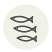

Poutine ✦
Poutine (Niçoise whitebait)
| Nom latin | Sardina pilchardus / Engraulis encrasicolus (fry) |
|---|---|
| Famille | Poissons & fruits de mer |
| Origine | Riviera, de Cagnes à Menton |
| Saison | février – mars |
| Goût | Délicat · Iodé · Salin · Doux |
| Prix courant | 30–60 €/kg |
Ce que c’est
Le droit européen interdit le débarquement d’alevins, et la Riviera détient l’une des rares dérogations : une fenêtre de quarante-cinq jours en fin d’hiver, accordée à une poignée de prud’homies entre Cagnes et Menton. Nice la cuisine le jour même — en omelette, en soupe, ou frite en galette de dentelle — et le nonat, presque identique, est l’alevin d’un gobie soumis à une autre règle.
En cuisine
Elle se garde en heures, pas en jours, et ne survit pas au robinet : sortez-la de son eau à l’écumoire et égouttez-la sur un linge. Une minute à l’huile d’olive avec de l’ail est la plus longue cuisson qu’elle mérite.
S’accorde avec
Huile d’olive Ail Citron Œuf Persil Vinaigre de vin blanc Poivre noir Farine T55
Même espèce
De saison en même temps
Palourde Cabillaud Fugu (poisson-globe) Civelle (pibale) Églefin Merlu
Une erreur ici, ou un oubli ? Dites-le nous